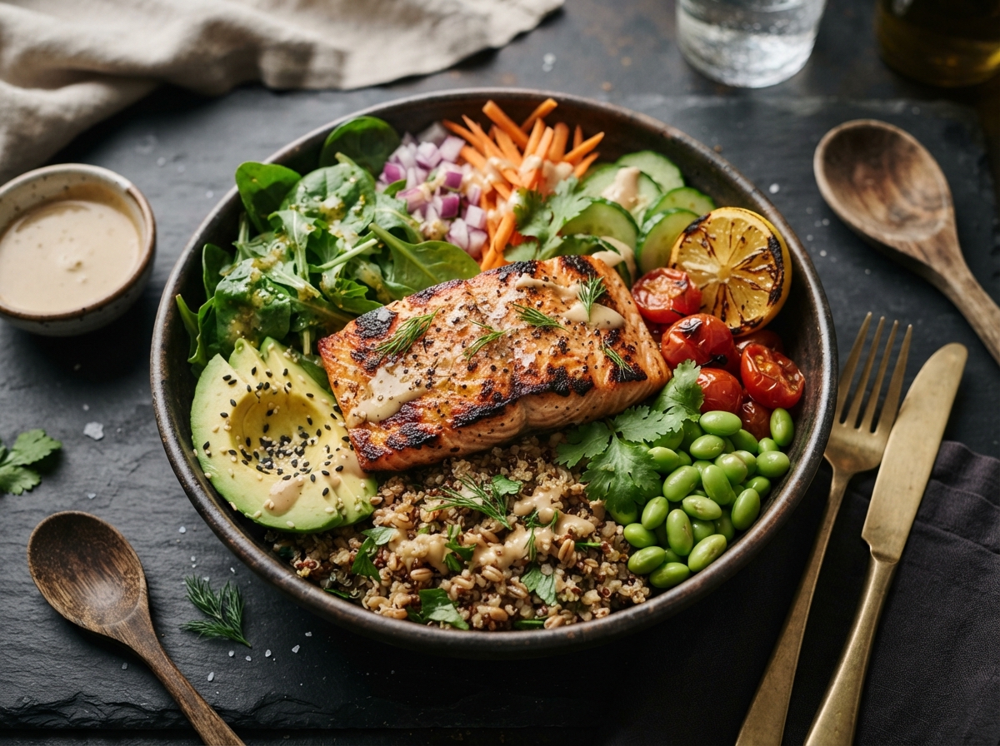

▦
Plan the week
Place recipes into meal slots and tailor servings, prep time and eating windows to your routine.
Bring your meals, fridge and shopping list together. Plan around what you have, adjust portions for your table and keep your budget in view.

Place recipes into meal slots and tailor servings, prep time and eating windows to your routine.
Track what is on hand and build shopping lists around missing ingredients.
Scan a packaged food, review available nutrition and keep one record across your kitchen and food log.